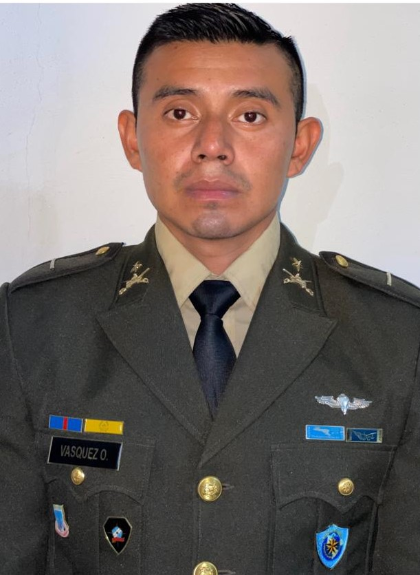

INFORMACION PERSONAL

SUBTTE. DE CABALLERIA CARLOS ENRIQUE VASQUEZ ORDONEZ
El subteniente Carlos Enrique Vasquez Ordonez, originario de San Miguel Chicaj, es un
oficial del ejercito de Guatemala, actualmente funge como alumno del Comando de Informatica y Tecnologia
para volvere un informatico mas en las gloriosas filas del ejercito.
| NO. |
CATALOGO |
No. TELEFONO |
BENEFICIARIO |
PROMOCION |
| 01 |
664345 |
55764883 |
Maria del Carmen Ordonez |
156 |